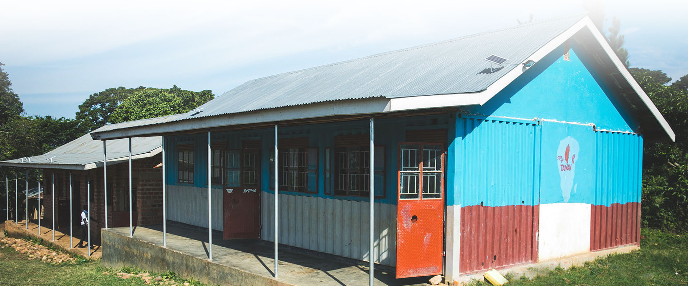

執行團隊
理監事暨執⾏團隊
- 劉兆雯 | 理事長 | 房角石社會企業負責人
- 王啟圳 | 副理事長 | 建築師
- 胡哲生 | 常務理事 | 台灣社會企業創新創業學會理事長 | 輔仁大學 教授
- 吳俊德 | 理事 | 職學國際負責人
- 王彥清 | 理事 | 水資源與國際社群經營
- 洪慧美 | 理事 | 上市公司專案經理
- 趙心屏 | 理事 | 集團秘書
- 盧秀芳 | 理事 | 媒體人
- 李潔 | 理事
- 羅秀英 | 監事 | Wash水資源計畫專案志工
- 莊明勳 | 監事
- 蕭文興 | 常務監事 | 行銷公司經理
- 丘麗英 | 候補監事 | 教育顧問（台灣）
- 張安妤 | 愛女孩發起人 | 行銷專員 Coordinator
- 許裕昌 | 社企營運長
- 王福裕 | 永續聚落設計與營造 專家顧問
- 張雁筑 | 企業顧問 | 社群經營顧問
- 陳英詔 | 醫療顧問 | 醫師
- 黃亭茵 | 非洲發展型計畫顧問 | 聯合國糧食援助專案顧問
- 盧俐靜 | 整合行銷顧問 | 資訊系統專案
- 賴美媖 | 社群經營顧問 | 藝術公司總監
- 曾克明 | 美術指導、產品設計
- 連怡涵 | 經濟與社會永續發展 研究員
- 賴淑媛 | 辦公室主任
- 李承翰 | 永續聚落執行專員
- 吳威廷 | 律師 | 日熙法律事務所
非洲
- Elle Yang | 創辦人 | 候補理事（台灣） | 東非事務負責人
- Isaac Chao | 非洲區域總監 | 候補理事（台灣） | 史瓦帝尼負責人
- Michelle Hu | 史瓦帝尼、莫三鼻克農業顧問 | 史瓦帝尼董事會成員
- Suzan Okae Abello | 烏干達婦女培力專案經理
- Swalle Excel Kafeero | 烏干達社企專案經理
- Evelyn Atis | 婦女培力項目 | 烏干達 裁縫顧問
- Martin Ochieng Ng’ollah | 東非 農村培力經理 |牧師
- Eddy Chou | 僑務委員(東非) | 企業家顧問
- Denis Byamukama | 社區發展經理 | 烏干達食農課程
- Justus Juma | 農業技師 | 烏干達農場經營
- Jeff Yao | 烏干達董事會成員 | 第24屆北美洲台灣商會 聯合總會總會長
- Beatrice Gladys Geria | 烏干達董事會成員 | 烏干達國會首席事務官
- Berna Hillary | Coordinator | 北烏干達 農村培力
- Asa Tsao | Coordinator | 婦女自立專案協作（養菇計畫）
- Proscovia Opiyo | Coordinator | 南蘇丹 婦女工作
- Sekubunga Roger | 東非養菇計畫顧問
- Samkeliso Dlamini | 專案農業技師
協作夥伴
- 台灣玩具圖書館協會
- 台灣愛服務學習協會
- Wehub Taipei
- 職學國際社會企業有限公司
- Caritas (Kingdown of Eswatini)
- 社團法人台灣社會企業創新創業學會
- 烏干達台商會
- Iris Goble (Kingdown of Eswatini)
- The bridge family church (Kingdown of Eswatini)
- 房角石社會企業有限公司
- Linne International Trade Co., PTY Ltd. (Eswatini)
